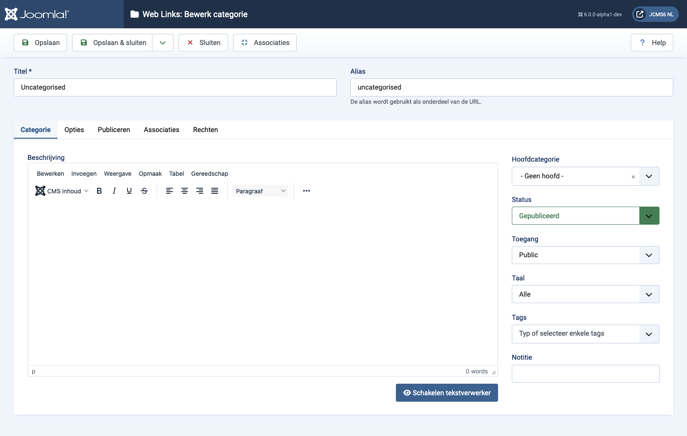

Joomla Help Screens
Weblinken: Categorie Bewerken
Beschrijving
De pagina Web Links: Categorie Bewerken wordt gebruikt om een nieuwe categorie te maken of een bestaande te bewerken. Let op dat je minstens één Web Link Categorie moet aanmaken voordat je een Web Link kunt maken. Bovendien zijn Web Link Categorieën gescheiden van andere soorten categorieën, zoals die voor Artikelen, Banners en Nieuwsfeeds.
Gemeenschappelijke Elementen
Sommige elementen van deze pagina worden behandeld in afzonderlijke Help-artikelen:
- Werkbalken.
- Het Tabblad Opties.
- Het Tabblad Publiceren.
- Het Tabblad Associaties.
- Het Tabblad Machtigingen.
Hoe te Toegang Krijgen
- Selecteer Component → Web Links → Categories uit het Administrator-menu. Vervolgens...
- Selecteer de Nieuw knop in de werkbalk om een nieuwe categorie toe te voegen. Of...
- Selecteer een Titel uit de kolom Titel van de lijst om een bestaande categorie te bewerken.
Screenshot

Formuliervelden
- Titel De titel voor dit item. Dit kan al dan niet worden weergegeven op de pagina, afhankelijk van de parameterwaarden die u kiest.
- Alias De interne naam van het item. Normaal gesproken kunt u dit leeg laten en Joomla zal een standaardwaarde invullen: de titel in kleine letters en met streepjes in plaats van spaties.
Categorietabblad
Linker paneel
- Beschrijving De beschrijving voor het item. Beschrijvingen van categorieën, subcategorieën en weblinks kunnen worden weergegeven op webpagina's, afhankelijk van de parameterinstellingen.
Vertaald door openai.com